上学期做过的事
仓库系统要回答两件事：货放在哪，放的是什么货。
上学期做完了「放在哪」。一个仓库下面有库区，库区下面有库位。库位是具体的格子。
WH-001 华东原料仓
A 区存储、B 区拣货
A-01-01、A-01-02、B-01-01
能登录的人已经在 tb_user 里。课堂账号是 admin，密码 Admin@123。
格子还在。货品已经记在 sku 表里，有编码、名称、单位。周一先看一条创建请求怎么走到这张表。周三再看入库完成之后，每个格子上各有多少。
这些东西在代码里在哪
查一个仓库，请求这样走。Controller 里不写 SQL。货品创建走同样的方向，下面按货品来看，不再单独讲登录。
接 HTTP
业务
SQL
warehouse 表
| 包 | 这一层做什么 | 仓库这条看哪个 |
|---|---|---|
controller | 接请求，返回结果 | WarehouseController |
controller/request | 页面传进来的字段 | WarehouseCreateRequest |
application | 业务 | WarehouseService |
domain | 业务对象 | Warehouse |
entity | 和表的一行对应 | WarehouseEntity |
mapper | SQL | WarehouseMapper |
converter | domain 和 entity 互转 | WarehouseConverter |
库区、库位也是这几层，只是名字换成 Zone、Location。今天的货品照这个加，不新发明一层。
库里已经有的货
启动之后，sku 表里已经有两行。这是 Flyway 写进去的，不是页面上创建的。
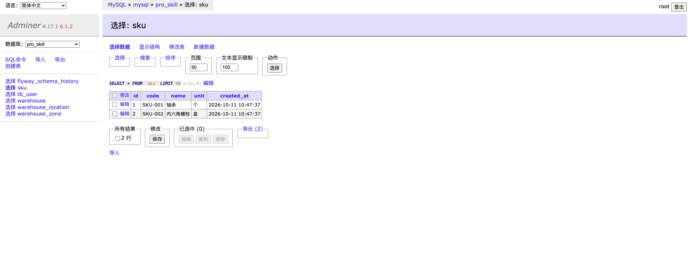
一次创建，数据经过哪里
下面用新建一颗螺丝钉来走。请求体是：
{
"code": "SKU-003",
"name": "十字螺丝",
"unit": "个"
}
三个字符串
把三个字段交出去
补上创建时间
INSERT
新的一行
1. 请求体
页面上的三个字段停在 SkuCreateRequest。空字符串过不了 @NotBlank。这一层还没有 id，也没有创建时间。
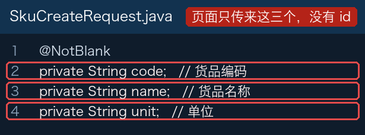
2. Controller
写法和 UserController 创建用户一样：不在这里 new 对象，把三个值传给 skuService.create。这里不写 SQL。返回给页面的 Sku 里，id 是插入之后才有的。
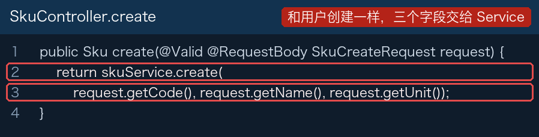
3. 业务对象和表的一行
Sku 是业务里的那一件货，没有表注解。SkuEntity 和 sku 表的列对齐。SkuConverter 在插入成功后，把带 id 的那一行变回 Sku。
4. Service
SkuService.create 自己 new 一行，把三个字段放进去，创建时间用当前时间，然后插入。
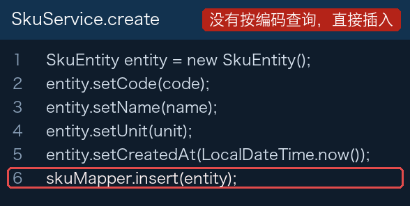
5. Mapper 和表
SQL 只列出要写入的四列。#{code} 取的是这行实体的 code，另外三个占位符同理。id 不在列清单里，由数据库生成；@Options 再把生成的主键放回实体的 id。方法返回的数字是写下了几行，成功是 1，不是主键。
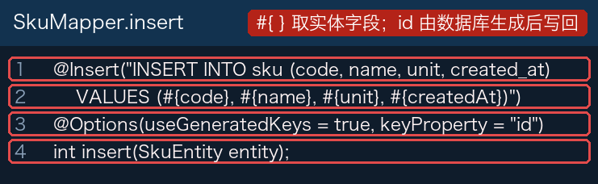
表和最开始的两行在 V7__create_sku_table.sql。应用启动时 Flyway 执行这个文件，所以 GET /skus 一上来就有轴承和螺栓。
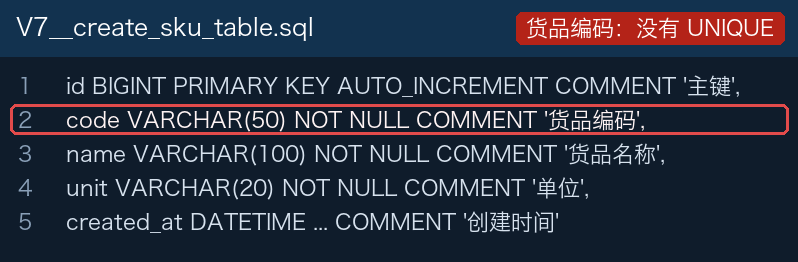
SKU-003 十字螺丝会返回 200，并多出一个新 id。GET /skus 变成三行。课堂上直接看这个走向，不必再提交一次。代码让对话式 AI 生成
分层和字段清楚之后，类不必在讲义里抄。自己的作业要加一块类似的功能时，把下面这段发给 DeepSeek 或 Kimi，让它按这个仓库的写法生成。生成完不要直接覆盖课堂文件。打开它列出的类，用上一节的顺序检查：请求体里的字段，有没有原样走到 Mapper 的 INSERT，有没有在 Controller 里写 SQL。
这是 Spring Boot 项目，包名 com.eurasia.pro_skill。 请按现有仓库模块的分层，为「货品」生成代码，不要改仓库、库区、库位。 字段只有编码 code、名称 name、单位 unit。 需要： - Flyway 脚本建 sku 表，加上自增 id 和 created_at - SkuCreateRequest、Sku（domain）、SkuEntity - SkuConverter 用 MapStruct，Entity 转成 Domain - SkuMapper 用注解写 INSERT 和查询全部 - SkuService 做创建和列表 - SkuController 提供 POST /skus 和 GET /skus，返回 Domain 对照 UserController：创建时把字段一个个传给 Service，不要在 Controller 里用 builder 组装对象。 生成后用一段话说明：一次创建请求里，code、name、unit 依次经过哪些类，id 在哪一层出现。
同一种货再记一次
轴承已经是 SKU-001。再用这个编码创建一次，名称仍是轴承，单位个。接口没有拒绝。
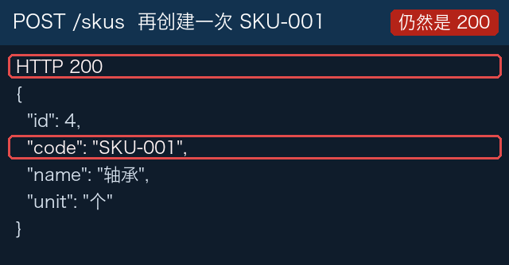
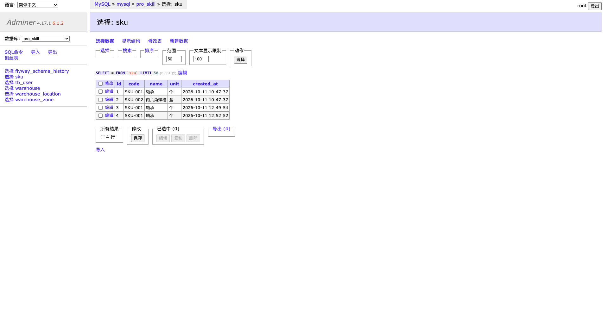
这几行是一种轴承，还是几种？以后说「SKU-001 进了 10 个」，算在哪一个 id 上？
为什么第二次还能进去
仓库的编码旁边写着唯一约束。货品表的 code 列没有这一行。
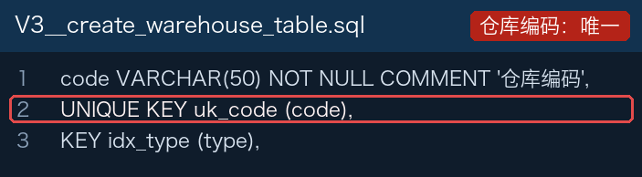
仓库在插入之前会先按编码查一次，查到就拒绝。货品的 create 把字段放好就插入，中间没有这次查询。
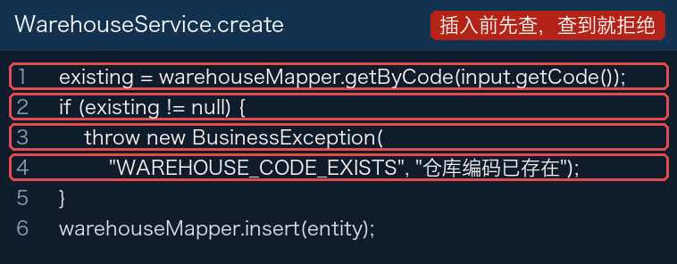
所以第二次也是 200。编码、名称、单位都顺利走到了表里，只是没有任何一层拒绝相同编码。
改良版改了这一块：相同编码进不了第二行
「第二部分改良版」上的货品创建，在 Service 停住，到不了 INSERT。表上再加一道唯一约束，直接写库也进不了第二行。下面四张图就是改良版里的代码和结果。
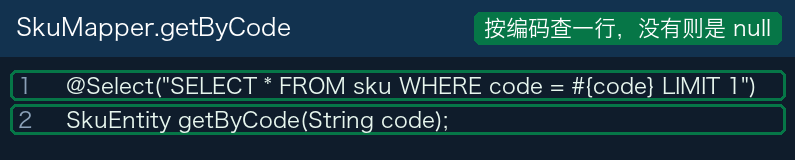
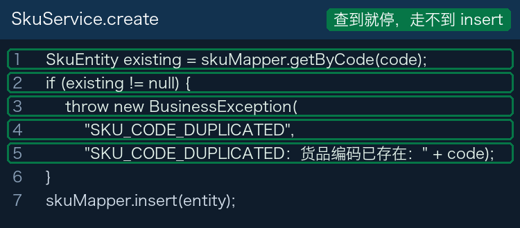
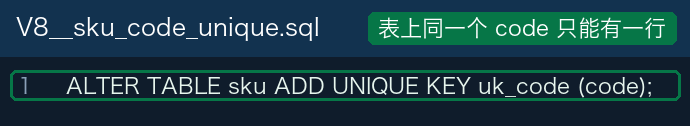
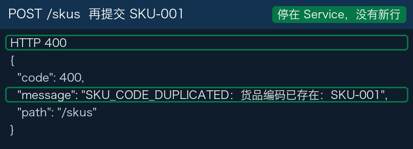
三个接口，数据经过哪里
和用户、货品一样，Controller 不写 SQL。页面上的字段传到 Service，Service 再交给 Mapper。编码在进表之前换成主键。新建草稿和加一行，两个分支是同一套。不同的是完成时数量写到哪里、状态是否一起改。
接路径和字段
决定写哪张表
SQL
inbound_order / line / sku.on_hand
1. 新建草稿
POST /inbound-orders 没有请求体。Controller 不传字段，Service 自己生成单号和状态。
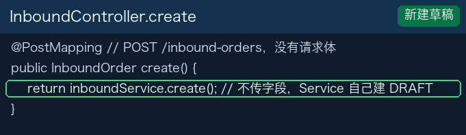
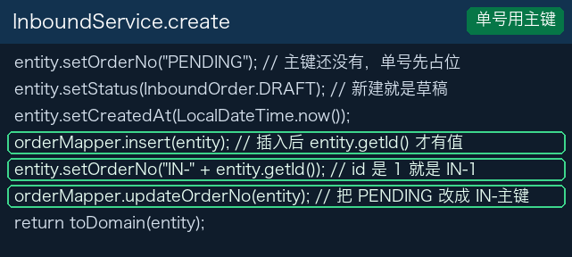
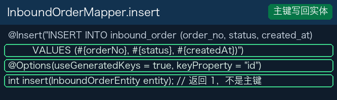
inbound_order 多一行。status 是 DRAFT，order_no 是 IN- 加上这行的 id。2. 给草稿加一行
POST /inbound-orders/1/lines。路径上的 1 是入库单主键。请求体是三个字段：
{
"skuCode": "SKU-001",
"locationCode": "A-01-01",
"quantity": 10
}
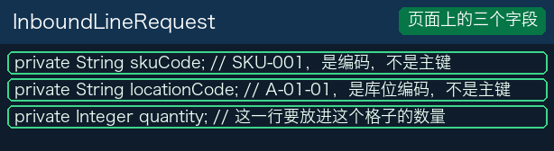
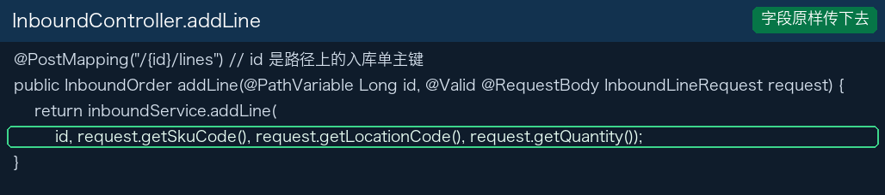
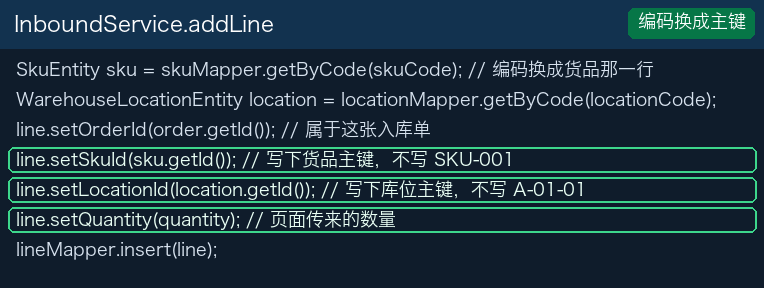
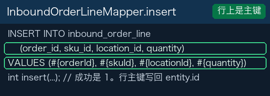
inbound_order_line 多一行。order_id 是这张单，sku_id 和 location_id 是查出来的主键，quantity 是 10。单据 status 还是 DRAFT。3. 完成
POST /inbound-orders/1/complete 没有请求体。数量用的是行上已经记下的 quantity。这一版没有把数量记到库位上，而是加进 sku.on_hand。
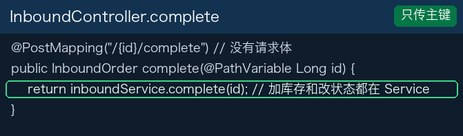
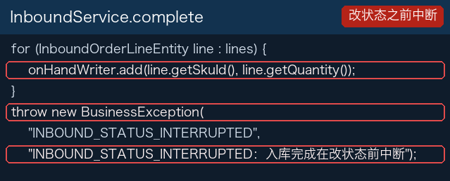
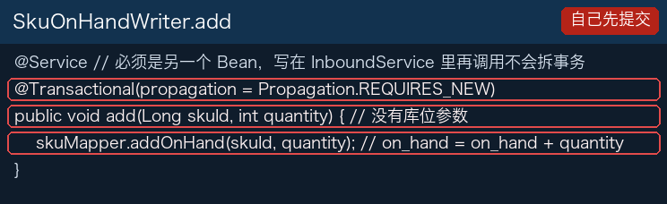
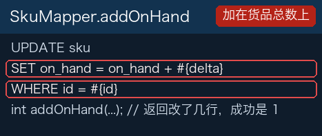
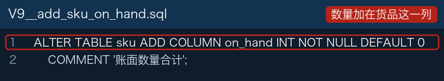
两张入库单做完之后
第一张：SKU-001 进 A-01-01，数量 10。第二张：同一货品进 A-01-02，数量 8。两次完成都返回下面这种结果。
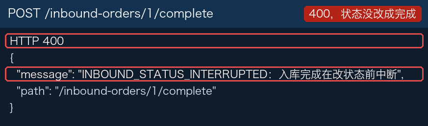
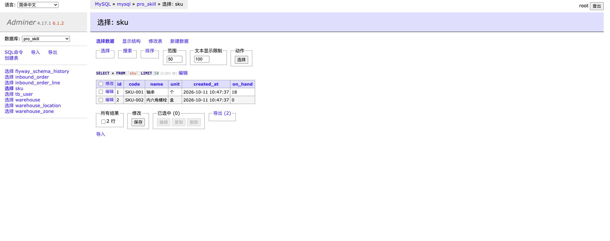
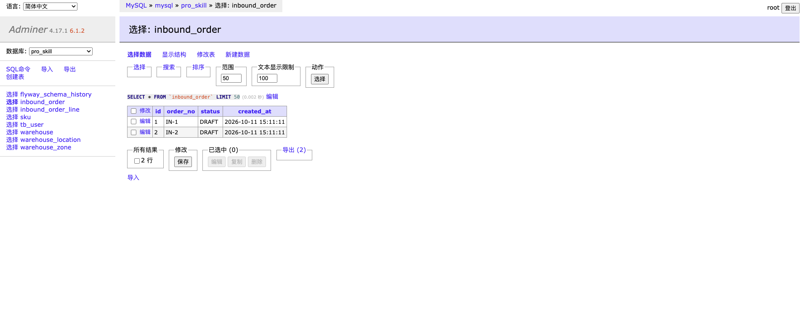
A-01-01 上现在有多少轴承。表上只有 18 这一个数。两张单都还写着草稿。改良版改了这一块：每个格子一行，数量和状态一起提交
「第二部分改良版」上的完成，把数量记到「货品 + 库位」，并和单据状态同一次提交。Controller 仍只传 id。变的是 Service 和它调用的 SQL。
只传 id
加库存并改状态
按货品 + 库位
inventory
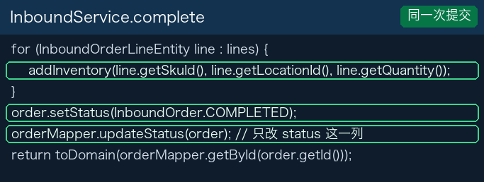
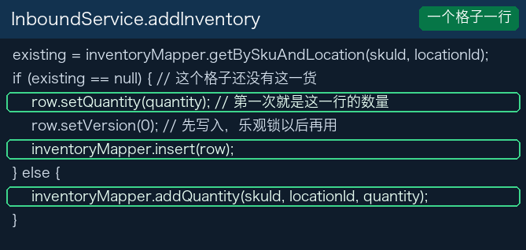
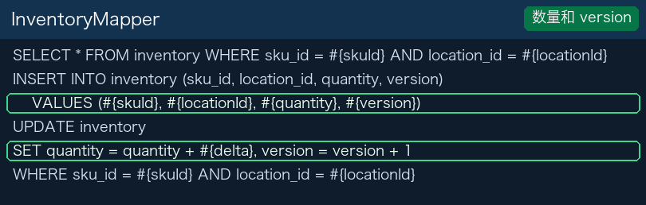
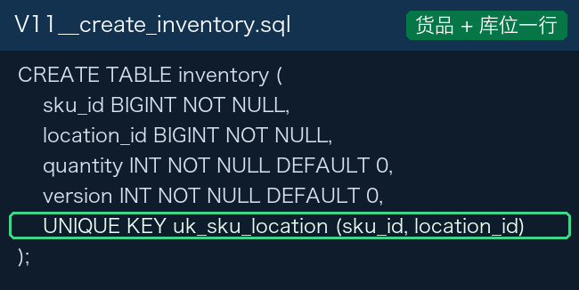
同一张货 SKU-001，10 进 A-01-01，8 进 A-01-02。两次完成都返回已完成。问某个格子，读 inventory.quantity 那一行。
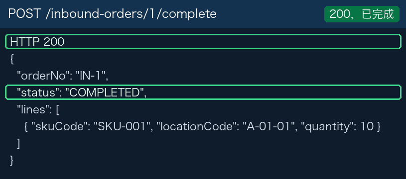
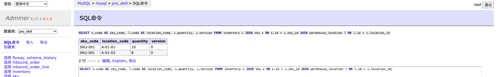
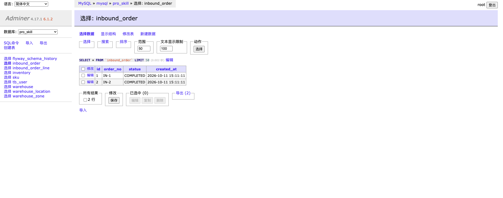
改良版改了哪两块
讲义到这里是同一份。「第二部分改良版」上不同的是代码，就这两块。
| 这一部分现在的代码 | 改良版上的代码 |
|---|---|
相同编码还能再插入一行。sku.code 没有唯一约束，create 也不查询。 |
getByCode 查到就拒绝，错误码 SKU_CODE_DUPLICATED。V8 给 code 加 UNIQUE KEY。 |
完成时把数量加在 sku.on_hand，库位没有记下来。这一步单独提交，改状态之前中断，单据仍是 DRAFT。 |
数量记到 inventory，按货品 + 库位各一行。加数量和改状态在同一个事务里，单据是 COMPLETED。 |
新建草稿、加一行，两个分支是同一套。课堂上把改良版合并进第二部分，带过去的是上面这两块代码。
重温：把改良版合并进第二部分
第一部分做过一次：自己的仓库里新建分支、推上去、在网页上创建 Pull Request、在网页上点合并。这次用课堂仓库重温，分支已经定好。
仓库地址仍是 https://gitee.com/dingsaier/warehouse-backend.git。源分支是 第二部分改良版，上面是改过的货品和入库代码。目标分支是 第二部分。讲义和这一份相同。教师先按下面做完，学生看。全班只合并这一次，不要每人再推一个同名分支。
1. 切到改良版
GitHub Desktop 里点 Fetch origin，再点 Current Branch，选「第二部分改良版」。列表里没有，就说明网上还没有这条分支。
这一步的意思：接下来要送出去的是改良版，不是第二部分本身。
2. 推上去
上方如果是 Publish branch 或 Push origin，点它。账号和第一部分一样：用户名是 Gitee 个性地址，密码框粘贴私人令牌。没有写入权限时，这一步会被拒绝，接着看教师的屏幕即可。
这一步的意思：Pull Request 只能合并网上已经有的分支。Push 是把改良版送到 Gitee。
3. 在网页上创建 Pull Request
浏览器打开该仓库，点「Pull Requests」，再点「新建 Pull Request」。源分支选 第二部分改良版，目标分支选 第二部分。标题写「合入第二部分改良版」。点「创建」。
这一步的意思：这是一张合并申请，请把改良版上多出来的提交并进第二部分。创建之后，第二部分还没有变。页面上能看到将要并进去的文件，主要是货品查重、唯一约束，以及按库位记账的完成逻辑。
4. 在网页上合并
就在这个 Pull Request 页面点「合并」，再确认。不要回 GitHub Desktop 点 Merge。
这一步的意思：网页把改良版的提交接进第二部分。点完以后，第二部分里才有这次的代码。
5. 把合并结果拿回来
GitHub Desktop 里 Current Branch 换成「第二部分」。上方变成 Pull origin 时点它。
这一步的意思：合并发生在网上。Pull 把第二部分的新提交拿进你正在看的这份本地仓库。不点的话，你电脑上的第二部分还是合并前的样子。
作业里要写同类接口时
把下面这段发给 DeepSeek 或 Kimi。生成后按上面的顺序检查：编码有没有在进表之前被拒绝，库位有没有进到某一行，数量有没有和单据状态分两次提交。
这是 Spring Boot 项目，包名 com.eurasia.pro_skill。 请按 UserController 的方式写入库：Controller 把字段传给 Service，不要用 builder。 入库单 inbound_order：单号、状态 DRAFT/COMPLETED、创建时间。 入库行 inbound_order_line：货品、库位、数量。 完成时把数量记到「货品 + 库位」各自的一行，并在同一个事务里把状态改成 COMPLETED。 库存表 inventory：sku_id、location_id、quantity、version，唯一键是货品加库位。 货品编码不能重复：插入前按 code 查询，已存在就拒绝；表上给 code 加唯一约束。 生成后说明：一次完成请求里，数量和状态分别在哪一层写下去。